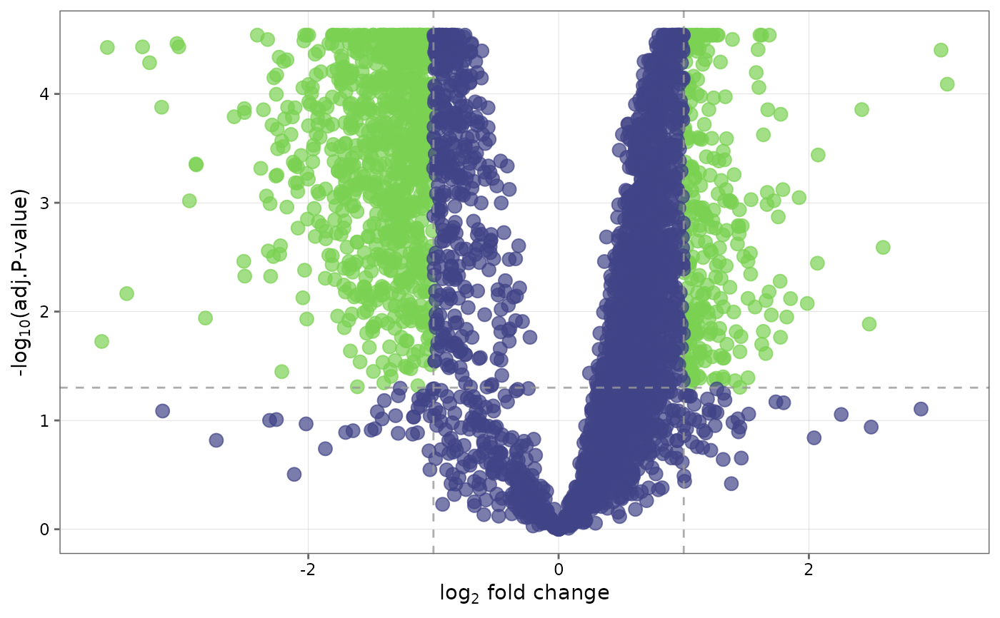
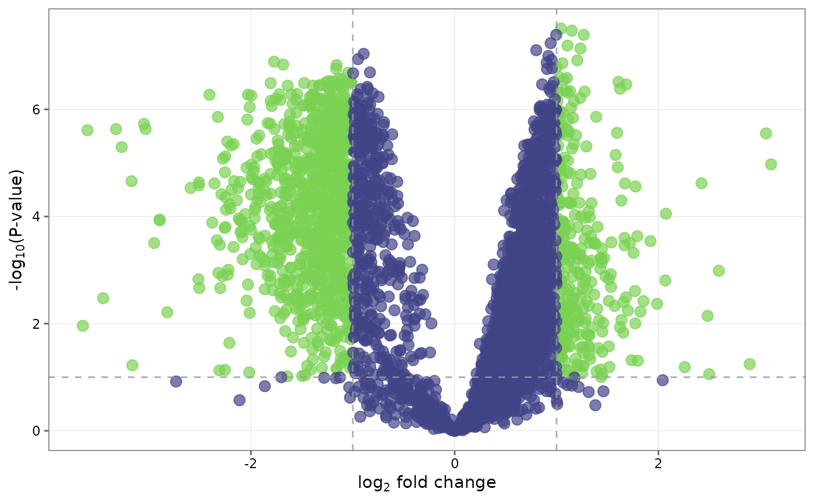
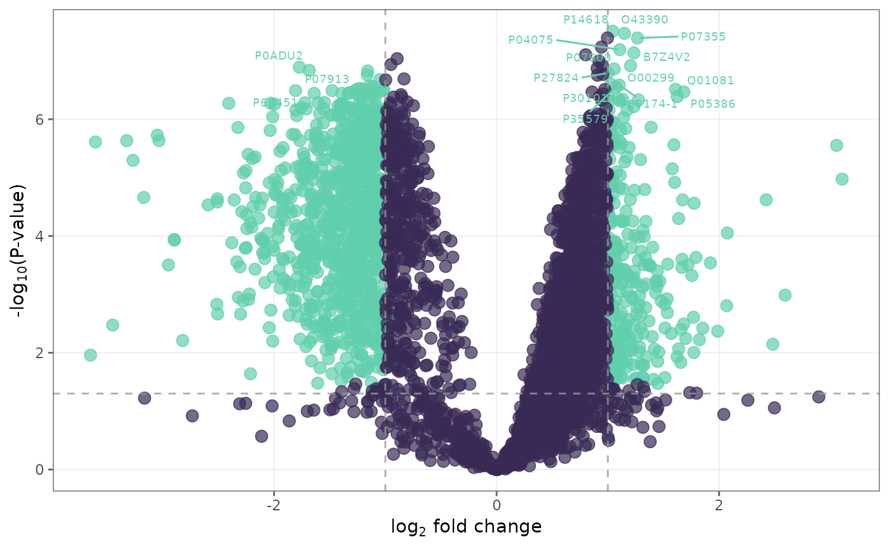

This function generates volcano plots to visualize differentially expressed proteins between groups.
Usage
volcano_plot(
fit_df,
adj_method = "BH",
sig = "adjP",
cutoff = 0.05,
lfc = 1,
line_fc = TRUE,
line_p = TRUE,
palette = "viridis",
text_size = 10,
label_top = FALSE,
n_top = 10,
save = FALSE,
file_path = NULL,
file_name = "Volcano_plot",
file_type = "pdf",
plot_height = 7,
plot_width = 7,
dpi = 80
)Arguments
- fit_df
A
fit_dfobject from performingfind_dep.- adj_method
Method used for adjusting the p-values for multiple testing. Default is
"BH".- sig
Criteria to denote significance. Choices are
"adjP"(default) for adjusted p-value or"P"for p-value.- cutoff
Cutoff value for p-values and adjusted p-values. Default is 0.05.
- lfc
Minimum absolute log2-fold change to use as threshold for differential expression.
- line_fc
Logical. If
TRUE(default), a dotted line will be shown to indicate thelfcthreshold in the plot.- line_p
Logical. If
TRUE(default), a dotted line will be shown to indicate the p-value or adjusted p-valuecutoff.- palette
Viridis color palette option for plots. Default is
"viridis". Seeviridisfor available options.- text_size
Text size for axis text, labels etc.
- label_top
Logical. If
TRUE(default), labels are added to the dots to indicate protein names.- n_top
The number of top hits to label with protein name when
label_top = TRUE.Default is10.- save
Logical. If
TRUEsaves a copy of the plot in the directory provided infile_path.- file_path
A string containing the directory path to save the file.
- file_name
File name to save the plot. Default is "Volcano_plot."
- file_type
File type to save the plot. Default is
"pdf".- plot_height
Height of the plot. Default is 7.
- plot_width
Width of the plot. Default is 7.
- dpi
Plot resolution. Default is
80.
Details
Volcano plots show log-2-fold change on the x-axis, and based on the significance criteria chosen, either -log10(p-value) or -log10(adjusted p-value) on the y-axis.
volcano_plotrequires afit_dfobject from performing differential expression analysis withfind_dep.User has the option to choose criteria that denote significance.
Examples
## Create a volcano plot with default settings.
volcano_plot(ecoli_fit_df)

## Change significance criteria and cutoff
volcano_plot(ecoli_fit_df, cutoff = 0.1, sig = "P")

## Label top 30 differentially expressed proteins and
## change the color palette of the plot
volcano_plot(ecoli_fit_df, label_top = TRUE, n_top = 30, palette = "mako")
#> Warning: ggrepel: 27 unlabeled data points (too many overlaps). Consider increasing max.overlaps
